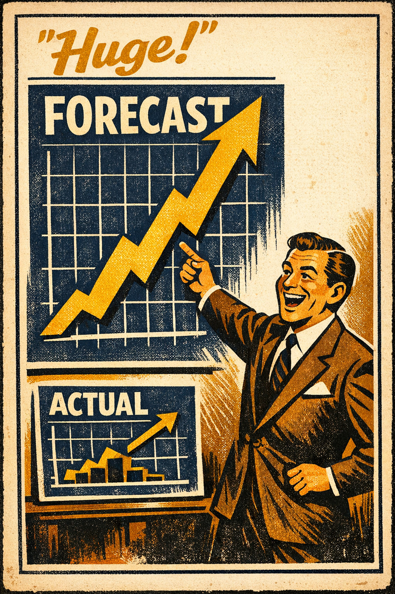
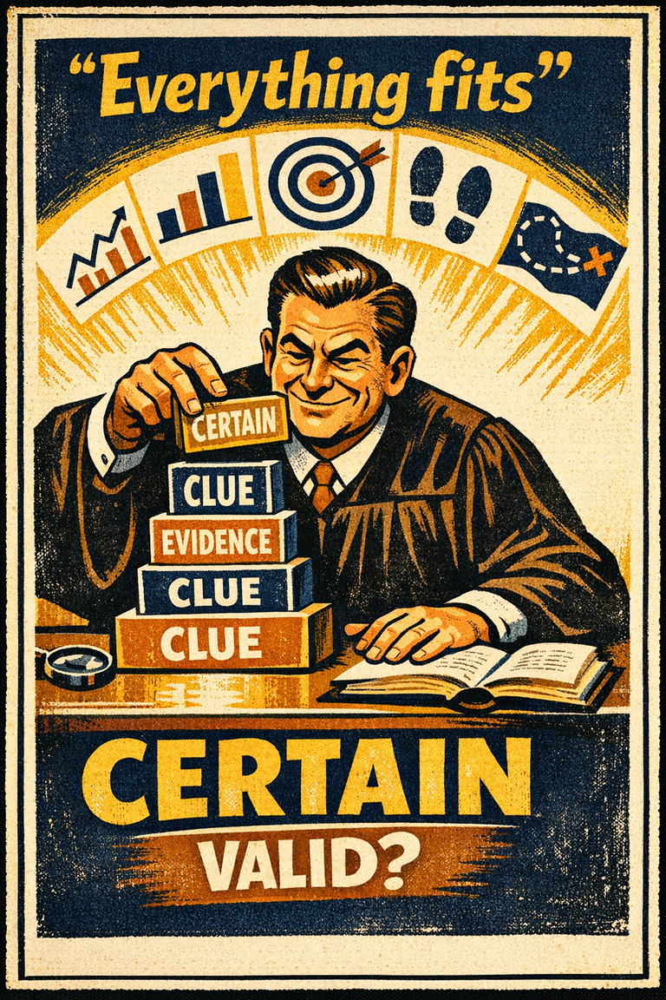
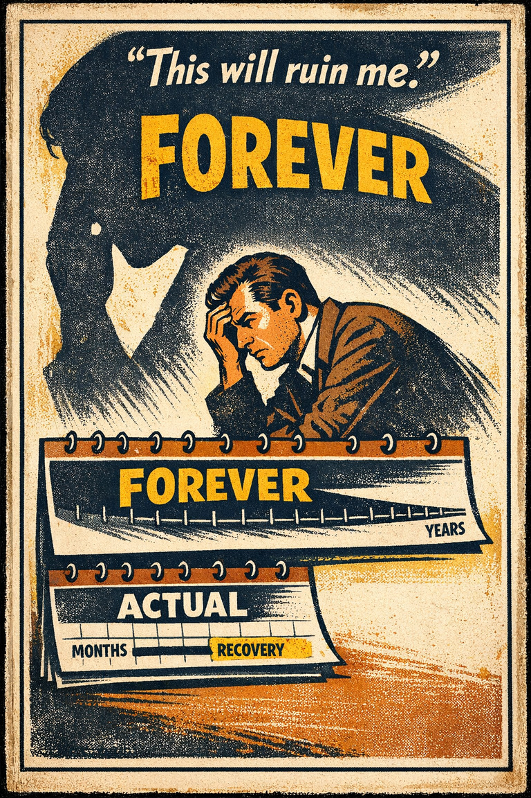
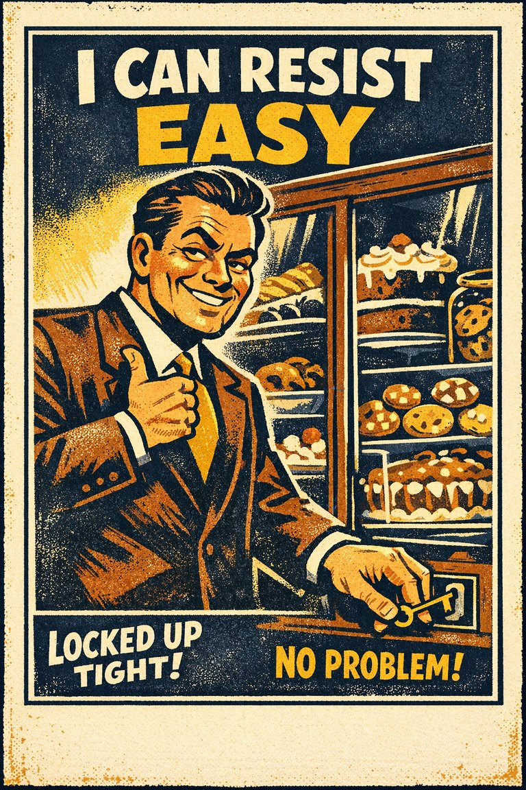

Everyday life
In everyday life, this often looks like people leaning on the easiest first interpretation when situations where estimation is already difficult and the outcome cue feels easier to trust than a fuller review..

Cognitive Biases
A practical cognitive-bias site with clear definitions, learning paths, assessments, self-audits, and debiasing tools.
Cognitive Bias
The tendency for people who are satisfied with their wage to overestimate how much they earn, and conversely, for people who are unsatisfied with their wage to underestimate it
What it distorts
Biases that distort numerical judgment, risk perception, calibration, and first-pass estimates.
Typical trigger
Situations where estimation is already difficult and the outcome cue feels easier to trust than a fuller review.
First countermove
Start with the estimation question instead of the first intuitive answer, then check whether the outcome pattern is doing invisible work.
Best use
Quick reference
What number, rate, sample, or magnitude is being misread because the mind grabbed an easier proxy?
In estimation problems, the result of an event bends how the process, evidence, memory, or explanation is interpreted afterward before a fuller check catches up.
Use the quick check and reflection questions before locking the label. Nearby entries often share the same outer appearance while differing in what actually drives the distortion.
Each example changes the surface context while keeping the same hidden distortion in place.
In everyday life, this often looks like people leaning on the easiest first interpretation when situations where estimation is already difficult and the outcome cue feels easier to trust than a fuller review..
At work, this often appears when teams treat the first coherent story as sufficient instead of slowing the process long enough to compare alternatives.
In public discourse, it often surfaces when commentators move too quickly from salience to conclusion while the underlying evidence remains thinner than it sounds.
The distortion usually feels like ordinary good judgment from the inside, which is why procedural repairs matter more than mere recognition.
Teaching note: Start with the estimation problem, then show how the outcome pattern makes the distortion feel natural from the inside.
The strongest debiasing moves change the process, not just the label.
Start with the estimation question instead of the first intuitive answer, then check whether the outcome pattern is doing invisible work.
Ask someone else to restate the case from a genuinely different starting point before committing.
Change the workflow so this distortion becomes harder to repeat by default next time.
Practice And Repair
Follow the moment where the bias first becomes attractive, then track how that attraction turns into a distorted judgment before jumping straight to the label.
Situations where estimation is already difficult and the outcome cue feels easier to trust than a fuller review.
The first coherent reading starts to feel like ordinary good judgment from the inside.
Biases that distort numerical judgment, risk perception, calibration, and first-pass estimates.
Start with the estimation question instead of the first intuitive answer, then check whether the outcome pattern is doing invisible work.
What number, rate, sample, or magnitude is being misread because the mind grabbed an easier proxy?
Spot It
Slow It
Reframe It
These are nearby labels that can share the same outer appearance while differing in what actually drives the distortion. Use the overlap, the distinction, and the diagnostic question together before settling the call.
Why compare it: A nearby label worth comparing before settling the diagnosis.
Why compare it: A nearby label worth comparing before settling the diagnosis.
Why compare it: A nearby label worth comparing before settling the diagnosis.
These are useful when the label seems roughly right but the process change still feels underspecified.
What number, rate, sample, or magnitude is being misread because the mind grabbed an easier proxy?
How is the known result warping the way the earlier judgment or evidence now feels?
What evidence or comparison would most seriously change the current call?
These sourced cases come from closely related biases and help show the same kind of pressure while a direct case for this page catches up.
Decisions judged differently after good or bad results
Baron and Hershey showed that people rated the quality of decisions differently depending on the known outcome, even when the decision process was held constant.
Why it fits: The result contaminates evaluation of the process that produced it.
Related through: Outcome bias
Journal of Personality and Social Psychology · 1988
Medical choices judged by patient result rather than process quality
The same treatment choice can be praised as wise after a good outcome and condemned as poor after a bad outcome even when the original evidence and uncertainty were identical.
Why it fits: The ending is rewriting the quality score for the process.
Related through: Outcome bias
Modern decision research
These neighbors were selected from shared categories, shared patterns, and explicit editorial links where available.

The tendency to expect or predict more extreme outcomes than those outcomes that actually happen.

The tendency to overestimate the accuracy of one's judgments, especially when available information is consistent or inter-correlated.

The tendency to overestimate the length or the intensity of the impact of future feeling states.

The tendency to judge a decision mainly by its result rather than by the quality of the reasoning behind it.

The tendency for people to underestimate the time it will take them to complete a given task.

The tendency to overestimate one's ability to show restraint in the face of temptation.